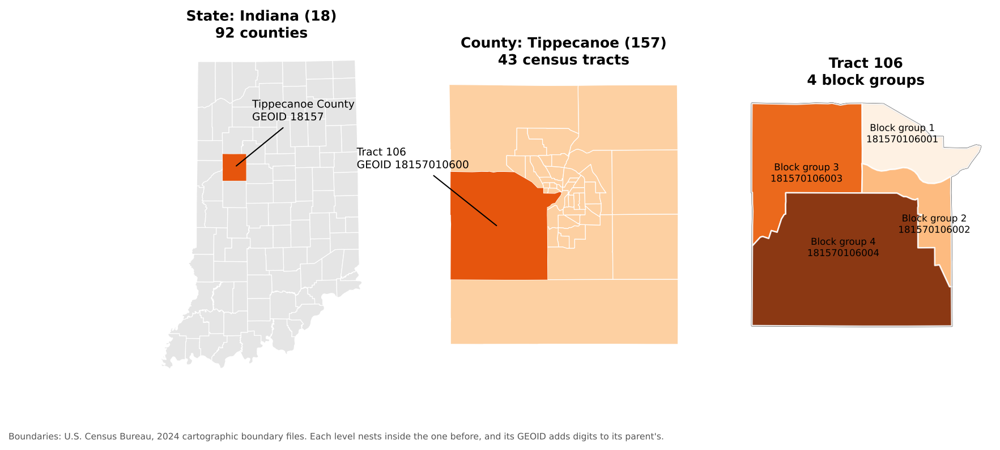
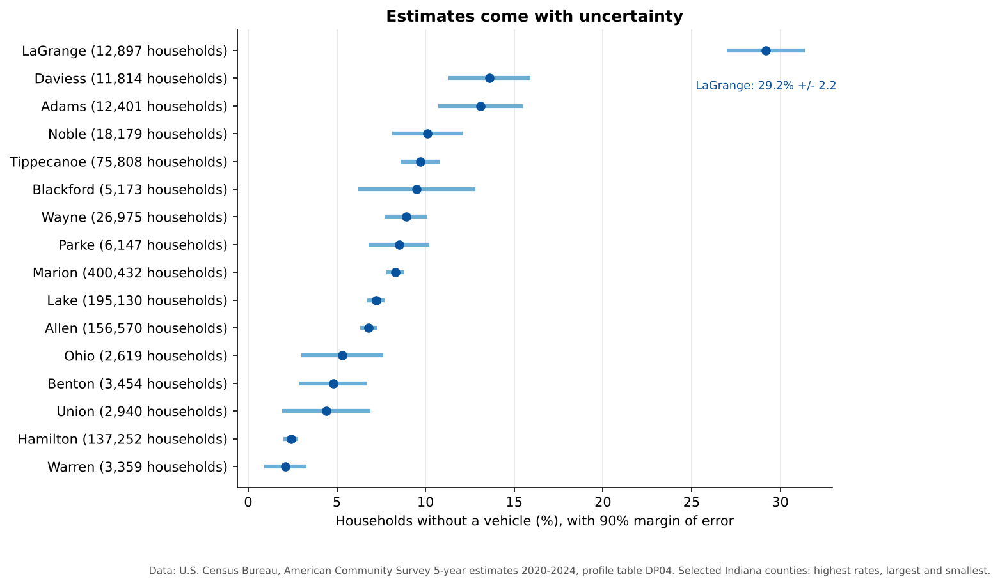
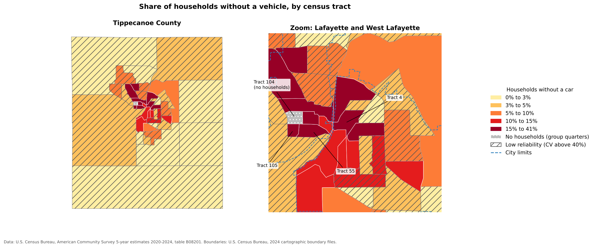

Data from the U.S. Census Bureau
Last updated on 2026-10-17 | Edit this page
Overview
Questions
- What data does the U.S. Census Bureau publish, and how is it organized?
- What is the difference between the Decennial Census and the American Community Survey?
- How do I get census data with the Census API?
- How do census tables connect to census maps?
Objectives
- Describe the three main Census Bureau products: boundary files, the Decennial Census and the ACS
- Explain census geographies and how GEOIDs identify them
- Interpret ACS estimates together with their margins of error
- Build a Census API request and run it in a web browser
- Use the Python notebooks to download census data and join it to boundaries
Introduction
The U.S. Census Bureau is the largest source of free social and economic data about the United States. Social scientists use it to describe neighborhoods, plan services for particular groups, choose sites for new facilities, study the effects of policies and hazards, and much more. Three products matter most for mapping:
- Boundary files (TIGER/Line and cartographic boundary files): the shapes
- The Decennial Census: a count of everyone, every ten years
- The American Community Survey (ACS): a yearly survey with detailed social and economic topics
Census geography
The Census Bureau reports data for a hierarchy of areas. Each level nests inside the one above:
| Level | Typical size | Example in Tippecanoe County |
|---|---|---|
| State | Indiana | |
| County | Tippecanoe County | |
| Census tract | about 1,200 to 8,000 people (4,000 on average) | 43 tracts |
| Block group | about 600 to 3,000 people | Several per tract |
| Block | A city block, or a larger rural area | Smallest unit; Decennial Census only |
Other geographies do not nest neatly: places (cities and towns), ZIP Code Tabulation Areas (ZCTAs, approximations of ZIP code areas), congressional districts, school districts and urban areas.
Every area has a GEOID built from FIPS codes (Federal Information Processing Standards codes):
| Level | Pattern | Example | Meaning |
|---|---|---|---|
| State | SS |
18 |
Indiana |
| County |
SS + CCC
|
18157 |
Tippecanoe County |
| Tract |
SS + CCC + TTTTTT
|
18157010600 |
Tract 106 |
| Block group | tract + G
|
181570106001 |
Block group 1 of tract 106 |

GEOIDs are text, not numbers. If a program stores
01 (Alabama) as the number 1, it no longer
matches, which is the most common reason a table fails to join to a
map.
Boundary files
The shapes come in two families:
-
TIGER/Line files (named
tl_...) are the full-detail master files, published every year since 2007. They include legal boundaries that extend into water, and features such as roads, railroads and rivers. -
Cartographic boundary files (named
cb_...) are simplified versions clipped to the shoreline, at 1:500,000, 1:5,000,000 and 1:20,000,000 scale. They are much smaller and are the better choice for thematic maps.
Both are free from https://www.census.gov/geographies/mapping-files.html and can be read straight from the web by QGIS or Python.
The Decennial Census and the American Community Survey
The Decennial Census counts every person living in the United States every ten years (most recently in 2020). Because it is a count, it has no sampling error, but it asks only a few questions: age, sex, race, Hispanic origin, household relationship, and whether a home is owned or rented. It is published down to the block level.
The American Community Survey (ACS) is sent to about 3.5 million addresses every year. It covers topics the Decennial Census does not, including:
- Social: school enrollment, educational attainment, marital status, veteran status, disability, language spoken at home, ancestry, place of birth
- Economic: income, poverty, employment, occupation, commuting, SNAP benefits, health insurance
- Housing: home value, rent, vehicles available, internet access, year built
| American Community Survey | Decennial Census | |
|---|---|---|
| Method | Survey of a sample | Count of everyone |
| How often | Every year | Every 10 years |
| Topics | Many social, economic and housing topics | A few basic topics |
| Margins of error | Yes | No |
| Smallest area | Block group (5-year estimates) | Block |
1-year and 5-year estimates
| Product | Based on | Published for | Best when |
|---|---|---|---|
| 1-year estimates | 12 months of responses | Areas with 65,000 or more people | You need the most current numbers for a large area |
| 5-year estimates | 60 months of responses | All areas, down to block groups | You need small areas or more reliable numbers |
The “2024 ACS 5-year estimates” pool responses from 2020 to 2024. They describe that whole period, not the year 2024 alone. (A 3-year product also existed, but it was discontinued after the 2011 to 2013 release.)
Margins of error
Because the ACS is a sample, every number is an estimate with a margin of error (MOE). The Census Bureau publishes 90% margins of error: we can be 90% confident the true value lies within the estimate plus or minus the MOE.

Notice that large counties have narrow error bars and small counties have wide ones. Blackford County’s 9.5% could plausibly be anywhere from about 6% to 13%. Two estimates whose ranges overlap a lot may not really be different. A common rule of thumb uses the coefficient of variation (CV), the standard error as a percentage of the estimate:
CV = (MOE / 1.645) / estimate x 100
A CV below 12% is usually considered highly reliable, 12% to 40% medium, and above 40% low.
Why is LaGrange County so high?
LaGrange County in northern Indiana is home to one of the largest Amish communities in the United States, and many Amish households do not own cars. Surprising values often have real explanations. Look for them before you assume the data is wrong.
Three ways to get census data
| Method | Good for |
|---|---|
| data.census.gov | Browsing and downloading a table or two by clicking |
| Census Data API | Asking for exactly the variables and places you need, from a browser or a program; reproducible |
| Bulk files (FTP) | Downloading everything for a product at once |
The rest of this episode uses the API.
The Census Data API
An API (Application Programming Interface) lets you request data with a web address instead of clicking through a website. The answer comes back as a table (in JSON or CSV format) that a program can read directly. The API only ever returns summary data for areas, never information about individual people.
You need a free API key
The Census API now requires a key with every
request. Without one it replies with a “Missing Key” page. Request a key
at https://api.census.gov/data/key_signup.html. It arrives
by email within a few minutes, and you must click the activation link in
that email before it works. In the examples below, replace
YOUR_KEY with your own key. Treat it like a password and do
not post it online.
Anatomy of a request
https://api.census.gov/data/2024/acs/acs5/profile?get=NAME,DP04_0058E&for=county:*&in=state:18&key=YOUR_KEY| Part | In the example | Meaning |
|---|---|---|
| Dataset | 2024/acs/acs5/profile |
2024 ACS 5-year estimates, data profile tables |
get= |
NAME,DP04_0058E |
The variables you want, separated by commas |
for= |
county:* |
The geography; * means all of them |
in= |
state:18 |
The area they are inside (Indiana) |
key= |
YOUR_KEY |
Your API key |
The parts after the ? are joined with
&. Paste the address (with your key) into a web browser
and you will see a list of rows, one per county:
[["NAME","DP04_0058E","state","county"],
["Adams County, Indiana","1626","18","001"],
...Step 1: Find a dataset
The list of all datasets is at https://www.census.gov/data/developers/data-sets.html. Some common ones:
| Dataset path | What it is |
|---|---|
2024/acs/acs5 |
ACS 5-year detailed tables (variables starting with B or C) |
2024/acs/acs5/profile |
ACS 5-year data profiles (DP): ready-made counts and percentages |
2024/acs/acs5/subject |
ACS 5-year subject tables (S) |
2024/acs/acs1 |
ACS 1-year detailed tables (areas of 65,000 or more people) |
2020/dec/dp |
2020 Decennial Census demographic profile |
Step 2: Find your variables
Every dataset has a variables page. Add /variables.html
to the dataset address, for example https://api.census.gov/data/2024/acs/acs5/profile/variables.html.
Press Ctrl+F (or Cmd+F on a Mac) and
search for words such as “no vehicles available”. You will find:
| Variable | Label |
|---|---|
DP04_0058E |
Estimate: occupied housing units with no vehicles available |
DP04_0058M |
Margin of error of that estimate |
DP04_0058PE |
Percent of occupied housing units with no vehicles available |
DP04_0058PM |
Margin of error of that percent |
The last letters tell you what a variable is: E is an estimate, M its margin of error, and in the data profiles PE and PM are the percent and its margin of error. Variable names are case-sensitive.
Step 3: Choose the geography
| You want | Use |
|---|---|
| All states | for=state:* |
| All counties in Indiana | for=county:*&in=state:18 |
| One county | for=county:157&in=state:18 |
| All tracts in one county | for=tract:*&in=state:18&in=county:157 |
| All tracts in a state | for=tract:*&in=state:18 |
Tract and block group requests must name a state. State FIPS codes are listed at https://www.census.gov/library/reference/code-lists/ansi.html.
Step 4: Optional extras
- Add
&descriptive=trueto get a second header row with each variable’s plain-language label. - Add
&outputFormat=csvto get a CSV file instead of JSON, which opens in Excel.
For example, this returns the number and percent of households without a vehicle for Tippecanoe County as a CSV file:
https://api.census.gov/data/2024/acs/acs5/profile?get=NAME,DP04_0058E,DP04_0058PE&for=county:157&in=state:18&outputFormat=csv&key=YOUR_KEYSpecial values
Sometimes the API returns large negative numbers such as
-666666666. These are annotation codes,
not real values. -666666666 means the estimate could not be
calculated, often because too few people were sampled, or because almost
everyone in the area lives in group quarters (such as
university residence halls or prisons), which are not households.
Replace them with “missing” before calculating.
The Census Bureau also has a short video: Using the API to Access Census Data.
Hands-on: the Python notebooks
Three Google Colab notebooks put all of this into practice. They read every file straight from the web, so there is nothing to download. Notebooks 1b and 1c need your Census API key.
| Notebook | What you will do | Open |
|---|---|---|
| 1a. Census Boundaries | Read TIGER/Line and cartographic boundary files, find FIPS codes, map counties, tracts and roads | Open in Colab |
| 1b. Census API Basics | Make API requests, look up variables, use margins of error, compare the ACS and the Decennial Census | Open in Colab |
| 1c. Joining Tables to Maps | Join ACS data to tract boundaries by GEOID and map households without a car, showing reliability | Open in Colab |
In Colab, choose File > Save a copy in Drive first so your changes are kept.
Notebook 1c ends with this map:

The highest shares are in central Lafayette and West Lafayette, where many residents are students or live in apartments within walking distance of shops and bus routes. Tract 104, on the Purdue campus, has more than 8,000 residents but no households, because nearly everyone there lives in residence halls. Hatched tracts have estimates with low reliability.
Read a GEOID
What does the GEOID 181570104002 identify?
It has 12 characters, so it is a block group: state
18 (Indiana), county 157 (Tippecanoe), tract
010400 (tract 104), block group 2.
Build an API request
Write a Census API address that returns total
population (B01003_001E) and its margin of error
for every county in Ohio (state FIPS code
39) from the 2024 ACS 5-year detailed tables. Then open it
in your browser with your key.
https://api.census.gov/data/2024/acs/acs5?get=NAME,B01003_001E,B01003_001M&for=county:*&in=state:39&key=YOUR_KEYDetailed tables (variables starting with B) use the dataset path
2024/acs/acs5, without /profile. Ohio has 88
counties, so you should see 89 rows including the header.
Are these really different?
Two neighboring counties report these shares of households without a vehicle:
- County A: 6.0%, margin of error 2.5
- County B: 4.5%, margin of error 2.7
Can you say County A has a higher rate than County B?
Not with confidence. County A’s range is 3.5% to 8.5% and County B’s is 1.8% to 7.2%. The ranges overlap a lot, so the difference may just be sampling noise. (The Census Bureau publishes a formal significance test for comparing two estimates, but overlapping ranges are a quick warning sign.)
- Census boundary files provide the shapes; the Decennial Census and the ACS provide the numbers
- GEOIDs link tables to shapes; keep them as text
- The Decennial Census is a full count with few questions; the ACS is a yearly survey with many topics and margins of error
- Use 5-year ACS estimates for small areas, and always check margins of error
- The Census API needs a free key and lets you request exactly the variables and places you need